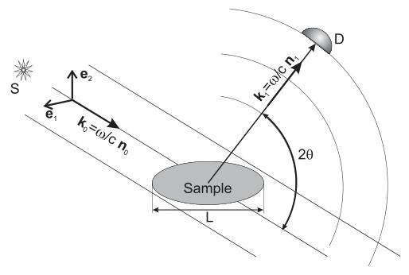
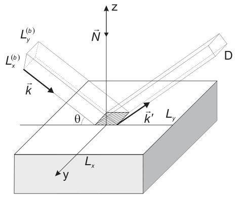
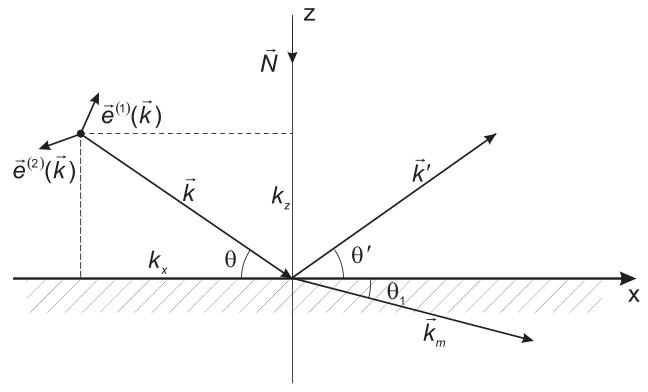
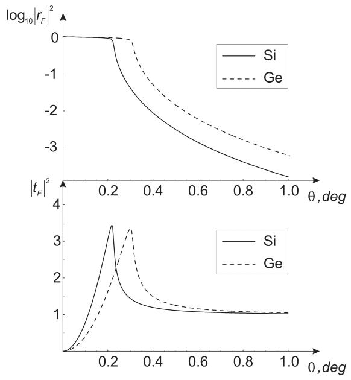
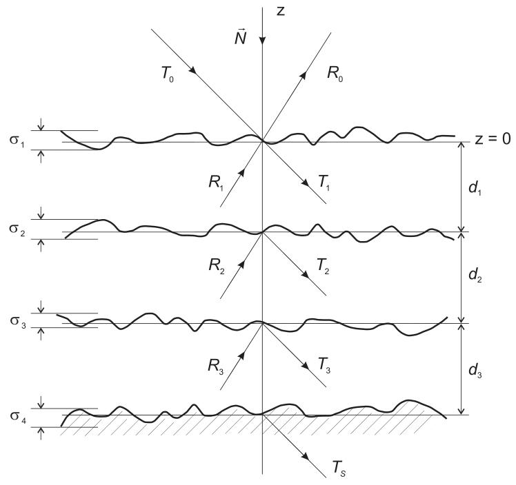
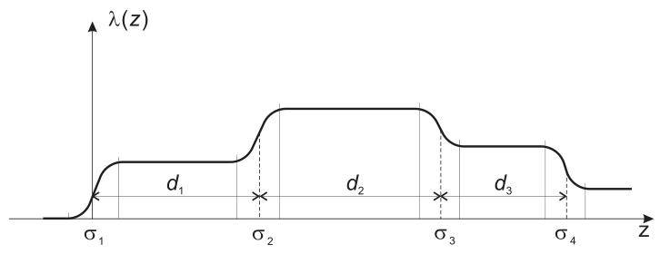
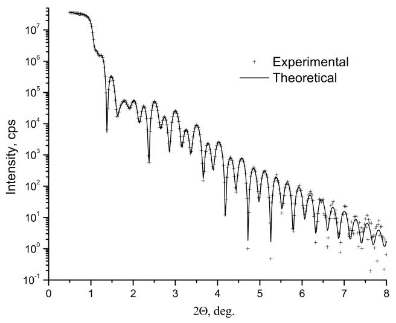

这篇文章偏物理背景，适合用于理解高分辨 XRD 和 XRR 为什么需要稳定光路、精密测角和模型拟合。若用于项目沟通，可重点关注 XRR 多层结构、临界角、Parratt 递推和 Laue/Bragg 条件。
I. X射线弹性散射
X射线是研究材料结构的独特工具，对于众多高科技工艺具有极其重要的意义。X射线应用的优势源于一系列关键因素：i) 波长短，可提供与原子中电子密度分布特征尺寸相当的分辨率；ii) X射线束与物质相互作用弱，可对样品进行非破坏性表征；iii) 这种相互作用形式简单且通用，对于基于X射线散射轮廓重建被测介质中电子密度分布的反问题求解具有重要意义。
大多数X射线技术基于X射线辐射弹性散射谱的研究，即入射光束和散射光束的光子频率ω相等，因此入射光束波矢(k₀)和散射光束波矢(k₁)满足以下关系：
|k₀| = |k₁| = k₀ = ω/c = 2π/λ (1)
其中λ为X射线辐射波长，c为光速。
因此，关于样品结构（电子密度分布）的信息完全包含在散射X射线辐射的角分布轮廓中。每种X射线方法的最终目标是解决散射反问题，即从散射X射线强度轮廓确定样品结构。然而在实际应用中，需要一个中间阶段来解决正散射问题，包括基于研究样品的微观模型对散射X射线强度轮廓进行理论计算（建模）。

物理学基于专著中描述的X射线纳米尺度分析的理论概念。
描述研究样品中X射线弹性散射的基本基础由X射线光学的微观方程定义。它们是通过对介质微观状态上的麦克斯韦方程进行平均而推导得到的，依赖于磁化率傅里叶分量χ_μ,ν(H, k, ω)的值，包含了样品中电子密度分布的主要信息。这里矢量H由所考虑晶体的倒易格矢集合定义，H = 0的情况对应于均匀介质。
探测器上的X射线通量强度I_D定义了关于X射线与研究样品相互作用的信息。I_D值与X射线散射的微分截面dσ/dΩ成正比，该截面应基于X射线光学方程计算。特定偏振的辐射在立体角dΩ内、方向k₁附近的微分截面，由散射到探测器孔径r²dΩ的波的能流与入射波能流密度之比给出：
dσ⁽ˢ⁾/dΩ = r² (k₁·S_sc)/(k₀·S₀) = 1/(4π)² sin²θ₁ₛ |T⁽ˢ⁾(k₀, k₁)|²
其中T⁽ˢ⁾(k₀, k₁)定义了散射波场矢量势的振幅。
II. X射线反射率 (XRR)
从样品散射的X射线强度的一般计算需要求解麦克斯韦方程。此外，还必须考虑实验几何，因为X射线源、样品和探测器的相互位置以及样品形状都会影响观测结果。根据实验几何的不同，X射线可用于探测研究样品的不同性质，并且存在许多实验装置来实现各种X射线应用技术。
被证明对研究样品表面和亚表层有效的实验几何特例是X射线镜面反射率，简称X射线反射率（XRR），此时入射波和反射波都与样品表面构成掠角。

这里我们通过样品表面（水平面）定义坐标系x、y，并以z轴作为该表面的向内法线。这种情况下的散射势仅包含X射线磁化率的零次谐波，它与样品元素的电子密度n_e成正比。描述均匀介质散射特性的标量折射率定义如下：
n²(ω) = ε(ω) = 1 + χ(ω); n(ω) ≡ 1 + β + iδ ≈ 1 + ½χ(ω) (3)
β = 2πc²/ω² n_e [f′(0) + Δf′(ω)], δ = 2πc²/ω² n_e [f″(0) + Δf″(ω)]
其中Δf′(ω)和Δf″(ω)分别是反常色散校正的实部和虚部。
A. 理想表面的X射线散射
计算对应于平面z = 0的理想光滑表面的X射线散射是进一步分析非理想样品反射的基础。在大多数情况下，假设样品在(x, y)方向上尺寸无限大，这个问题可简化为求解一维波动方程。
V⁽ᴹ⁾(r, ω) = k₀²χ(ω)H(z) (4)
微扰势取决于样品在横向平面的尺寸和X射线束尺寸：
V(r, ω) = -k₀²χ(ω)S(r)
首先，我们考虑矢量势A的麦克斯韦方程的解，其变换为：
(Δ + k₀²[1 + χ(ω)H(z)]) A_k,s⁽⁺⁾(r, ω) = 0 (6)
入射到样品的波的边界条件为：
A_k,s⁽⁺⁾(r, ω) ≈ e⁽ˢ⁾(k) e^(i(k_x x + k_z z)); z → -∞; s = 1, 2 (7)
坐标系的定位方式为：y = 0平面与由矢量k和样品表面法线N构成的入射平面重合，即k_y = 0, k_x = k₀ cosθ, k_z = k₀ sinθ。偏振矢量e⁽¹⁾(k)位于入射平面内（π偏振），e⁽²⁾(k)垂直于入射平面（σ偏振）。

方程(6)中的变量是分离的，通解表示为平面波的组合：
A₁,s⁽⁺⁾ = e⁽ˢ⁾(k) e^(i(k_x x + k_z z)) + R⁽ˢ⁾e⁽ˢ⁾(k′) e^(i(k′_x x + k′_z z)), z < 0
A₂,s⁽⁺⁾ = T⁽ˢ⁾e⁽ˢ⁾(k_m) e^(i(k_xm x + k_zm z)), z > 0
由于边界条件在表面上的每个点都成立，因此x相关相位系数彼此相等，因此波矢的横向分量守恒：
k_x = k′_x = k_xm; θ = θ′; cosθ₁ = (1/n)cosθ
k′_z = -k_z; k_zm = k₀√(n² - cos²θ) (11)
对于σ偏振，条件导出以下振幅方程（解为菲涅耳系数）：
1 + R⁽²⁾ = T⁽²⁾; k_z(1 - R⁽²⁾) = k_zm T⁽²⁾
R⁽²⁾ ≡ r_F = (k_z - k_zm)/(k_z + k_zm) = (sinθ - √(n² - cos²θ))/(sinθ + √(n² - cos²θ))
T⁽²⁾ ≡ t_F = 2k_z/(k_z + k_zm) = 2sinθ/(sinθ + √(n² - cos²θ)) (12)
对于X射线区域波长的电磁辐射，|χ(ω)|的量级约为10⁻⁵，因此反射r_F和透射t_F的菲涅耳系数与偏振无关。图5展示了硅和锗晶体的反射波和透射波强度行为。

由方程(12)可知，与全外反射临界角θ_c相比，反射系数仅在入射角的窄范围内才显著：
sinθ ≈ θ ~ θ_c ≡ √(2|β|) ~ 10⁻² rad (15)
B. 多层结构的X射线反射率
X射线反射率技术的卓越能力在研究非均匀样品时得到广泛应用，这类样品由堆叠的薄层组成，薄层之间由明显的平行界面分隔，并生长在厚衬底上。由大量薄层组成的多层膜构成了半导体和纳米技术工业中的一大类样品。

样品(x, y)方向的尺寸被视为无限大，这确保了波矢横向分量k_⊥在样品整个深度上守恒。因此，与单表面情况类似，矢量势的解可从下式得到：
A_k(r) = e e^(i k_⊥·r) φ_kz(z) (24)
其中函数φ_kz(z)满足标量波动方程：
{d²/dz² + k_z² + V(r)} φ_kz(z) = 0; k_z = k₀ sinθ (25)
在XRR中考虑波场与每个界面的相互作用时，仅考虑相干散射。散射势是单一坐标z的函数：
V(z) = k₀² Σ_{j=0}^{J} {χ_{j+1}(ω)Λ_j(z) + χ_j(ω)[1 - Λ_j(z)]} (26)

为推导Parratt方程，使用了第l层内波场的表达式。解表示为分别沿z轴正方向和负方向传播的、振幅为T_l、R_l的平面波的线性组合：
φ_kzj⁽ʲ⁾(z) = T_j e^(i k_zj z) + R_j e^(-i k_zj z)
k_zj = k₀√(sin²θ + χ_j(ω)) (29)
Parratt通过对新变量实施递归方程组，推导出求解方程组的最有效方法：
X_j = R_j/T_j e^(2i k_zj z_j); X₀ = R₀; X_{J+1} = 0 (33)
边界条件X_{J+1} = 0对应于衬底内的反射波，假设真空中入射波的振幅等于1，则整个结构的反射系数R₀等于X₀。方程变换为简单形式：
X_j = (r_{j,j+1} + X_{j+1} e^(-2i k_z(j+1) d_{j+1})) / (1 + r_{j,j+1} X_j e^(2i k_zj d_j)) (34)

III. 晶体中的X射线衍射 (XRD)
上一章讨论的反射现象是任意波长辐射所固有的。控制反射过程的微观物理参数是磁化率的均匀部分。磁化率中在原子长度尺度上变化的部分，是波长为埃量级的辐射（X射线、中子和电子）所特有的。这部分磁化率代表了样品内部的原子排列，并导致衍射电磁场的特定分布，包含关于空间原子有序的信息。
玻恩近似意味着散射过程仅发生在原波上，散射波的二次散射可以忽略。只要衍射波振幅与原波相比较小（即相干散射晶体的尺寸小于消光长度时），这一点成立。对于大晶体对象，麦克斯韦方程的解基于布洛赫波获得，并且通常X射线磁化率的小值使得在大多数情况下仅将此基限制为两个波。这种方法称为动力学衍射理论。
A. 运动学X射线衍射理论
在运动学近似下，单个倒易格矢H和形状为S(r)的单晶物体的衍射辐射分布由以下表达式给出：
dσ⁽ˢ⁾/dΩ = 1/(4π)² sin²θ₁ₛ k₀⁴|χ(H, ω)|² |∫dr S(r) e^(-i(q-H)·r)|² (35)
对于非偏振X射线，结果为：
dσ/dΩ = 1/(4π)² (1 + cos²2θ)/2 k₀⁴|χ(H, ω)|² |∫dr S(r) e^(-i(q-H)·r)|² (36)
当满足条件q - H时，X射线散射截面达到最大值，即：
k₁ - k₀ = H (37)
这个矢量方程称为劳厄（Laue）方程。将方程重写为k₁ = H + k₀，并对左右两边取平方，考虑k₁² = k₀² = k₀²，得到布拉格（Bragg）条件：
2k₀·H + H² = 0 (38)
或以角度2θ表示：
2k₀ sin(2θ_B/2) = H; d sinθ_B = n λ/2 (39)
其中2θ_B是满足布拉格条件的角度；k₀ = 2π/λ；H = 2πn/d；λ是X射线波长；d是由矢量H定义的晶面间距。

四、从物理背景到仪器定制
高分辨 XRD 的测试能力来自整套系统的协同：X 射线源、单色器、准直光路、样品台、测角机构、探测器和软件拟合流程都需要围绕目标样品设计。对于外延片、多层膜、超晶格和应变材料，建议在方案阶段明确目标反射、角分辨率、样品尺寸、是否需要 XRR/RSM，以及后续分析模型。
若项目需要落地到仪器配置，可查看 XRD定制化解决方案 页面，其中包含高分辨XRD、薄膜/GIXRD、粉末XRD和多功能平台配置方向。
联系人：冯工 电话：18284839704